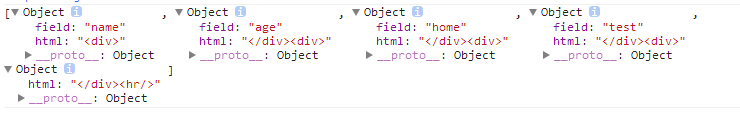

前言
Underscore 是一个JavaScript实用库,提供了类似Prototype.js (或 Ruby)的一些功能,但是没有扩展任何JavaScript内置对象。
它弥补了部分jQuery没有实现的功能,同时又是Backbone.js必不可少的部分。
Underscore提供了80多个函数,包括常用的: map, select, invoke — 当然还有更多专业的辅助函数,如:函数绑定, JavaScript模板功能, 强类型相等测试, 等等.
在新的浏览器中, 有许多函数如果浏览器本身直接支持,将会采用原生的,如 forEach, map, reduce, filter,every, some 和 indexOf。
我们使用Underscore一般配合backbone，用得最多的还是里面的模板引擎，我们今天就来一窥underscore的神秘面纱
PS：老规矩，我们还是看着API 一个个来看源码，如果确实有用的就写demo，我估计只会多模板引擎一块深入研究
本文参考了愚人码头翻译的中文api
template(templateString, [data], [settings])
模板引擎是underscore在我们项目中用得最多的东西，夸张点来说，除了模板引擎，其它东西我们都想将之移除
因为zepto本身提供了很多不错的方法，而移除其它无用方法后可以节约13-5k的流量，是一个不错的选择
模板引擎是实现数据与行为分离的一大利器，其实大概两年前我就干过这个事情了
两年前的模板引擎
当时的想法很傻很天真，做了最简单的对象替换，还恬不知耻的说自己用了模板预加载的模式，现在看来确实不错。。。。适合我坑爹的个性


1 <!DOCTYPE html PUBLIC "-//W3C//DTD XHTML 1.0 Transitional//EN" "http://www.w3.org/TR/xhtml1/DTD/xhtml1-transitional.dtd"> 2 <html xmlns="http://www.w3.org/1999/xhtml"> 3 <head> 4 <title></title> 5 <script src="../zepto/zepto.js" type="text/javascript"></script> 6 <script type="text/javascript"> 7 $(document).ready(function () { 8 var data = []; 9 var i; 10 for (i = 0; i < 10; i++) { 11 var temp = {}; 12 temp.name = "name_" + i.toString(); 13 temp.age = "age_" + i.toString(); 14 temp.home = "home_" + i.toString(); 15 temp.test = "test_" + i.toString(); 16 data.push(temp); 17 } 18 var template = "<div>{name}</div><div>{age}</div><div>{home}</div><div>{test}</div><hr/>" 19 var wl2 = $("#wl2"); 20 21 //现在做法 22 function update() { 23 var now = new Date(); 24 var beginTime = now.getTime(); 25 26 var templateObj = []; 27 var reg = /\{[A-Za-z]*\}/; 28 var para = reg.exec(template); 29 var tempHtml = template; 30 while (para && para.length > 0) { 31 var len = para.index; 32 var temp = {}; 33 temp.html = tempHtml.substr(0, len); 34 temp.field = para[0].substr(1, para[0].length - 2); ; 35 templateObj.push(temp); 36 tempHtml = tempHtml.substr(len + para[0].length); 37 para = reg.exec(tempHtml); 38 } 39 var end = {}; 40 end.html = tempHtml; 41 templateObj.push(end); 42 43 var html = ""; 44 $.each(data, function (index, dataItem) { 45 var tempHtm = ""; 46 $.each(templateObj, function (i, item) { 47 if (item.field) { 48 tempHtm = tempHtm + item.html + dataItem[item.field]; 49 } else { 50 tempHtm = tempHtm + item.html; 51 } 52 }); 53 html += tempHtm; 54 }); 55 wl2.append(html); 56 } 57 update(); 58 }); 59 60 </script> 61 </head> 62 <body> 63 <div id="wl2"> 64 </div> 65 </body> 66 </html>
当时想法比较简单，而且核心代码也比较少，提供一个模板加一个二维数据即可
① 第一步首先是解析模板，将模板变为字符串数组
1 var templateObj = []; 2 var reg = /\{[A-Za-z]*\}/; 3 var para = reg.exec(template); 4 var tempHtml = template; 5 while (para && para.length > 0) { 6 var len = para.index; 7 var temp = {}; 8 temp.html = tempHtml.substr(0, len); 9 temp.field = para[0].substr(1, para[0].length - 2); ; 10 templateObj.push(temp); 11 tempHtml = tempHtml.substr(len + para[0].length); 12 para = reg.exec(tempHtml); 13 } 14 var end = {}; 15 end.html = tempHtml; 16 templateObj.push(end);
<div>{name}</div><div>{age}</div><div>{home}</div><div>{test}</div><hr/>
上面一段模板解析结束后就变成了这个样子了：

可以看到已经将需要替换的标识给取了出来，接下来就进入第二步
② 现在就只需要将模板中的标识变为data的数据即可
1 var html = ""; 2 $.each(data, function (index, dataItem) { 3 var tempHtm = ""; 4 $.each(templateObj, function (i, item) { 5 if (item.field) { 6 tempHtm = tempHtm + item.html + dataItem[item.field]; 7 } else { 8 tempHtm = tempHtm + item.html; 9 } 10 }); 11 html += tempHtm; 12 }); 13 wl2.append(html);
这个代码本身不难，但是还是有很多缺陷的，比如说模板中的js就无法解析，当时为了解决这个问题还用到了eval自己注入自己......
现在回过头来，项目中的underscore模板用得很不错，所以今天我们首要来看看他的模板方法
初试模板
1 var compiled = _.template("hello: <%= name %>"); 2 compiled({name: 'moe'}); 3 => "hello: moe" 4 5 var list = "<% _.each(people, function(name) { %> <li><%= name %></li> <% }); %>"; 6 _.template(list, {people: ['moe', 'curly', 'larry']}); 7 => "<li>moe</li><li>curly</li><li>larry</li>" 8 9 var template = _.template("<b><%- value %></b>"); 10 template({value: '<script>'}); 11 => "<b><script></b>"
这就是underscore的模板相关的语法，只要提供模板，然后template一下，再给他个data就行了
最帅的就是其中可以使用js了，只不过js需要放到<%%>里面，于是我们来一点点看他的源码
事实上underscore的机制就是执行<%%>中的逻辑即可，其它都是配套的，或者其它都是字符串，由我们选择是否打印与否
源码分析
1 _.templateSettings = { 2 evaluate: /<%([\s\S]+?)%>/g, 3 interpolate: /<%=([\s\S]+?)%>/g, 4 escape: /<%-([\s\S]+?)%>/g 5 }; 6 var noMatch = /(.)^/; 7 8 var escapes = { 9 "'": "'", 10 '\\': '\\', 11 '\r': 'r', 12 '\n': 'n', 13 '\t': 't', 14 '\u2028': 'u2028', 15 '\u2029': 'u2029' 16 }; 17 18 var escaper = /\\|'|\r|\n|\t|\u2028|\u2029/g; 19 20 _.template = function (text, data, settings) { 21 var render; 22 settings = _.defaults({}, settings, _.templateSettings); 23 24 var matcher = new RegExp([ 25 (settings.escape || noMatch).source, 26 (settings.interpolate || noMatch).source, 27 (settings.evaluate || noMatch).source 28 ].join('|') + '|$', 'g'); 29 30 var index = 0; 31 var source = "__p+='"; 32 text.replace(matcher, function (match, escape, interpolate, evaluate, offset) { 33 source += text.slice(index, offset) 34 .replace(escaper, function (match) { return '\\' + escapes[match]; }); 35 36 if (escape) { 37 source += "'+\n((__t=(" + escape + "))==null?'':_.escape(__t))+\n'"; 38 } 39 if (interpolate) { 40 source += "'+\n((__t=(" + interpolate + "))==null?'':__t)+\n'"; 41 } 42 if (evaluate) { 43 source += "';\n" + evaluate + "\n__p+='"; 44 } 45 index = offset + match.length; 46 return match; 47 }); 48 source += "';\n"; 49 50 if (!settings.variable) source = 'with(obj||{}){\n' + source + '}\n'; 51 52 source = "var __t,__p='',__j=Array.prototype.join," + 53 "print=function(){__p+=__j.call(arguments,'');};\n" + 54 source + "return __p;\n"; 55 56 try { 57 render = new Function(settings.variable || 'obj', '_', source); 58 } catch (e) { 59 e.source = source; 60 throw e; 61 } 62 63 if (data) return render(data, _); 64 var template = function (data) { 65 return render.call(this, data, _); 66 }; 67 68 template.source = 'function(' + (settings.variable || 'obj') + '){\n' + source + '}'; 69 70 return template; 71 };
不得不说这段代码很经典啊，两年前我绝对不会想到如此重要的模板功能竟会只有这点代码......事实上看源码之前也不知道
① 参数说明
template本身是一个方法，可以提供三个参数，第一个为模板文本，第二个为对应模板数据，第三个为基本配置信息，一般不予传递
如果我们传递了data的话，会直接返回解析后的html字符串，没有传递的话就会返回一个编译过的模板
这里用到了defaults方法，我们来看看他是干什么的：
_.defaults(object, *defaults)
用defaults对象填充object中undefined属性。并且返回这个object。一旦这个属性被填充，再使用defaults方法将不会有任何效果。
var iceCream = {flavor: "chocolate"}; _.defaults(iceCream, {flavor: "vanilla", sprinkles: "lots"}); => {flavor: "chocolate", sprinkles: "lots"}
② 正则分析
这里用到的几个正则都是匹配全部字符，并且不会保存分组信息，首先看一个简单的
_.templateSettings = { evaluate : /<%([\s\S]+?)%>/g, interpolate : /<%=([\s\S]+?)%>/g, escape : /<%-([\s\S]+?)%>/g };
以上三个最后会被形成一个正则字符串组：
1 var matcher = new RegExp([ 2 (settings.escape || noMatch).source, 3 (settings.interpolate || noMatch).source, 4 (settings.evaluate || noMatch).source 5 ].join('|') + '|$', 'g'); 6 //=>/<%-([\s\S]+?)%>|<%=([\s\S]+?)%>|<%([\s\S]+?)%>|$/g
这个正则会由左向右的顺序匹配，如果成功了就不找后面的了，然后下面开始解析模板
③ 模板解析阶段
我们先不管他的逻辑，我们用这个正则来匹配下我们的代码看看有些什么东西
matcher.exec(text)
["<%-name %>", "name ", undefined, undefined]
以上为他输出的结果，第一个是匹配到的对象，第一个参数为匹配到的字符串，第二个为括号中的字符串，现在我们回到程序
程序中用了replace方法，该方法可使用正则表达式，第二个参数为一个函数，这里就需要各位对replace方法比较熟悉了：
function函数具有几个参数：
第一个参数为每次匹配的全文本（$&）。
中间参数为子表达式匹配字符串，个数不限，也就是括号中的东西
倒数第二个参数为匹配文本字符串的匹配下标位置。
最后一个参数表示字符串本身。
比如我这里第一次的匹配就应该是这个样子：
["<%-name %>", "name ", undefined, undefined, 5,
"<div><%-name %>{name}</div><div><%=age %>{age}</div><div><%=home %>{home}</div><div>{test}</div>,
<%if(name == "name_0") %>,我是叶小钗,<%else %>,我是素还真"]
我们来看看他的replace：
1 text.replace(matcher, function(match, escape, interpolate, evaluate, offset) { 2 source += text.slice(index, offset) 3 .replace(escaper, function(match) { return '\\' + escapes[match]; }); 4 5 if (escape) { 6 source += "'+\n((__t=(" + escape + "))==null?'':_.escape(__t))+\n'"; 7 } 8 if (interpolate) { 9 source += "'+\n((__t=(" + interpolate + "))==null?'':__t)+\n'"; 10 } 11 if (evaluate) { 12 source += "';\n" + evaluate + "\n__p+='"; 13 } 14 index = offset + match.length; 15 return match; 16 });
他正则有三个括号，所以他参数也相对而言有三个对应参数了，只不过后面的为空罢了，但是随着匹配类型不同，为空的顺序会不同
PS：各位注意这里的位置参数offset，后面有大用的，这里与我原来的做法类似
好了，我们这里来看他是如何一步步解析的，其实这里有个原则就是，如果能有js解析的一定还是用js简单，比如我们原来字符串转换json使用eval
④ 解析细节
按照我们给出的模板，第一次应该被解析到<%-name%>，这个东西插入的html会被转义比如
//<script>=><script>
他这里又分了几步走，第一步是将匹配字符串之前的字符串给保存起来，这里对应的“<div>”，
text.slice(index, offset)//text.slice(0, 5)=><div>
要注意的是，他这里做了字符串转义处理
1 source += text.slice(index, offset) 2 .replace(escaper, function(match) { return '\\' + escapes[match]; }); 3 //比如字符串中具有\n会被换成\\n，里面的引号也会做处理
1 if (escape) { 2 source += "'+\n((__t=(" + escape + "))==null?'':_.escape(__t))+\n'"; 3 } 4 /* 5 "__p+='<div>'+ 6 ((__t=(name ))==null?'':_.escape(__t))+ 7 '" 8 *
第一步处理后，我们的字符串变成了这样，然后我们的index当然会后移：
index = offset + match.length;
其中<%-str%>与<%=str%>都比较简单，特殊的情况发生在第三个地方
1 if (evaluate) { 2 source += "';\n" + evaluate + "\n__p+='"; 3 }
各位看到了，在模板中出现js表达式时候（非-、=情况），时候后面多了一个__p+=，这个东西学问就大了，因为这里字符串会重新多出一行
"__p+='<div>'+ ((__t=(name ))==null?'':_.escape(__t))+ '{name}</div><div>'+ ((__t=(age ))==null?'':__t)+ '{age}</div><div>'+ ((__t=(home ))==null?'':__t)+ '{home}</div><div>{test}</div>,'; if(name == "name_0") __p+='"
这个就比较经典了，如果使用js 的eval解析的话，前面会作为一个语句，后面会作为一个新的语句，整个模板解析结束便是这个东西了：
"__p+='<div>'+ ((__t=(name ))==null?'':_.escape(__t))+ '{name}</div><div>'+ ((__t=(age ))==null?'':__t)+ '{age}</div><div>'+ ((__t=(home ))==null?'':__t)+ '{home}</div><div>{test}</div>,'; if(name == "name_0") __p+=',我是叶小钗,'; else __p+=',我是素还真'; "
而对javascript function方法比较熟悉的朋友会知道，javascript其实本身就是使用Function构造函数搞出来的，比如说：
1 function test() { 2 alert('叶小钗'); 3 } 4 var test1 = new Function('alert(\'叶小钗\')'); 5 test(); 6 test1();
test1与test2实际上是等价的，而上面模板解析出来的字符串，不难联想会被我们封装为一个函数
PS：最简单的解析果然是javascript的自己的解析！
render = new Function(settings.variable || 'obj', '_', source);
这里underscore毫不犹豫的将解析结束的模板封装为了一个函数，render最后形成的函数体如下：
1 function anonymous(obj, _ /**/) { 2 var __t, __p = '', __j = Array.prototype.join, print = function () { __p += __j.call(arguments, ''); }; 3 with (obj || {}) { 4 __p += '<div>' + 5 ((__t = (name)) == null ? '' : _.escape(__t)) + 6 '{name}</div><div>' + 7 ((__t = (age)) == null ? '' : __t) + 8 '{age}</div><div>' + 9 ((__t = (home)) == null ? '' : __t) + 10 '{home}</div><div>{test}</div>,'; 11 if (name == "name_0") 12 __p += ',我是叶小钗,'; 13 else 14 __p += ',我是素还真'; 15 } 16 return __p; 17 }
不得不说，这个template代码写的真好......，这里还有一点需要注意的就是这里with语句的作用于问题，没有with的话可能就需要做其它处理了，也许是call
函数封装结束只等待调用即可：
var template = function(data) { return render.call(this, data, _); };
至此，我们队template的分析结束，我也为自己两年前的问题画下圆满的句号......
Collections
each(list, iterator, [context])
underscore也对each做了实现，如果引用了zepto/jquery包的话可以更加精简：
1 var each = _.each = _.forEach = function(obj, iterator, context) { 2 if (obj == null) return; 3 if (nativeForEach && obj.forEach === nativeForEach) { 4 obj.forEach(iterator, context); 5 } else if (obj.length === +obj.length) { 6 for (var i = 0, length = obj.length; i < length; i++) { 7 if (iterator.call(context, obj[i], i, obj) === breaker) return; 8 } 9 } else { 10 var keys = _.keys(obj); 11 for (var i = 0, length = keys.length; i < length; i++) { 12 if (iterator.call(context, obj[keys[i]], keys[i], obj) === breaker) return; 13 } 14 } 15 };
_.each([1, 2, 3], alert); => alerts each number in turn... _.each({one: 1, two: 2, three: 3}, alert); => alerts each number value in turn...
由于ECMAScript 5中的array提供了新的ForEach方法，这里如果支持最新的方法，使用即可
第一个参数为对象集合，第二个为回调函数，第三个为回调函数执行作用域，此方法与zepto类似又多了一个参数，这里不细究
map(list, iterator, [context])
码头哥的解释是，通过变换函数（iterator替代器、回调函数）,将list集合值映射到新数组
1 _.map = _.collect = function(obj, iterator, context) { 2 var results = []; 3 if (obj == null) return results; 4 if (nativeMap && obj.map === nativeMap) return obj.map(iterator, context); 5 each(obj, function(value, index, list) { 6 results.push(iterator.call(context, value, index, list)); 7 }); 8 return results; 9 };
_.map([1, 2, 3], function(num){ return num * 3; }); => [3, 6, 9] _.map({one: 1, two: 2, three: 3}, function(num, key){ return num * 3; }); => [3, 6, 9]
ECMAScript5 array同样实现了相关功能，其实就是用于处理数组的，根据处理结果返回新的数组，这个不予深究，想做精简也可以换下
reduce(list, iterator, memo, [context])
1 _.reduce = _.foldl = _.inject = function(obj, iterator, memo, context) { 2 var initial = arguments.length > 2; 3 if (obj == null) obj = []; 4 if (nativeReduce && obj.reduce === nativeReduce) { 5 if (context) iterator = _.bind(iterator, context); 6 return initial ? obj.reduce(iterator, memo) : obj.reduce(iterator); 7 } 8 each(obj, function(value, index, list) { 9 if (!initial) { 10 memo = value; 11 initial = true; 12 } else { 13 memo = iterator.call(context, memo, value, index, list); 14 } 15 }); 16 if (!initial) throw new TypeError(reduceError); 17 return memo; 18 };
var sum = _.reduce([1, 2, 3], function(memo, num){ return memo + num; }, 0); => 6
该函数将list中的集合归结为单独一个值，每个值会被回调函数处理
这个方法有点迷糊，我们稍微来理一理（这里忽略系统采用原生ECMAScript 5 的做法）：
① each方法中的回调第一个参数为当前值，第二个为index（这点好像与zepto不同），第三个为数组对象本身
② 如果传入参数过少（可能不含有回调函数或者传入失误，这里做容错处理，不予关注）
③ 调用回调函数返回处理的数值，由此逻辑结束
这里逻辑乱主要是传入的参数过多，而且参数有所重复，所以我开始有点迷糊
find(list, iterator, [context])
遍历数组，返回第一个回调检测为真的值
1 _.find = _.detect = function(obj, iterator, context) { 2 var result; 3 any(obj, function(value, index, list) { 4 if (iterator.call(context, value, index, list)) { 5 result = value; 6 return true; 7 } 8 }); 9 return result; 10 };
var even = _.find([1, 2, 3, 4, 5, 6], function(num){ return num % 2 == 0; }); => 2
比较简单，不予理睬，感觉何map有点类似的感觉
filter(list, iterator, [context])
遍历list，返回回调函数返回true的值
1 _.filter = _.select = function(obj, iterator, context) { 2 var results = []; 3 if (obj == null) return results; 4 if (nativeFilter && obj.filter === nativeFilter) return obj.filter(iterator, context); 5 each(obj, function(value, index, list) { 6 if (iterator.call(context, value, index, list)) results.push(value); 7 }); 8 return results; 9 };
var evens = _.filter([1, 2, 3, 4, 5, 6], function(num){ return num % 2 == 0; }); => [2, 4, 6]
简单来说就是过滤数组
where(list, properties)
遍历list，返回一个数组，这个数组包含对象所列出属性所有的值
1 _.where = function(obj, attrs, first) { 2 if (_.isEmpty(attrs)) return first ? void 0 : []; 3 return _[first ? 'find' : 'filter'](obj, function(value) { 4 for (var key in attrs) { 5 if (attrs[key] !== value[key]) return false; 6 } 7 return true; 8 }); 9 };
_.where(listOfPlays, {author: "Shakespeare", year: 1611});
=> [{title: "Cymbeline", author: "Shakespeare", year: 1611},
{title: "The Tempest", author: "Shakespeare", year: 1611}]
这个函数会调用find或者filter做筛选，本身意义不大
reject(list, iterator, [context])
返回list中没有通过iterator真值检测的元素集合，与filter相反。
1 _.reject = function(obj, iterator, context) { 2 return _.filter(obj, function(value, index, list) { 3 return !iterator.call(context, value, index, list); 4 }, context); 5 };
var odds = _.reject([1, 2, 3, 4, 5, 6], function(num){ return num % 2 == 0; }); => [1, 3, 5]
every(list, [iterator], [context])
1 _.every = _.all = function(obj, iterator, context) { 2 iterator || (iterator = _.identity); 3 var result = true; 4 if (obj == null) return result; 5 if (nativeEvery && obj.every === nativeEvery) return obj.every(iterator, context); 6 each(obj, function(value, index, list) { 7 if (!(result = result && iterator.call(context, value, index, list))) return breaker; 8 }); 9 return !!result; 10 };
_.every([true, 1, null, 'yes'], _.identity); => false
some(list, [iterator], [context])
1 var any = _.some = _.any = function(obj, iterator, context) { 2 iterator || (iterator = _.identity); 3 var result = false; 4 if (obj == null) return result; 5 if (nativeSome && obj.some === nativeSome) return obj.some(iterator, context); 6 each(obj, function(value, index, list) { 7 if (result || (result = iterator.call(context, value, index, list))) return breaker; 8 }); 9 return !!result; 10 };
_.some([null, 0, 'yes', false]); => true
如果list中有任何一个元素通过 iterator 的真值检测就返回true。一旦找到了符合条件的元素, 就直接中断对list的遍历. 如果存在原生的some方法，就使用原生的some
contains(list, value)
1 _.contains = _.include = function(obj, target) { 2 if (obj == null) return false; 3 if (nativeIndexOf && obj.indexOf === nativeIndexOf) return obj.indexOf(target) != -1; 4 return any(obj, function(value) { 5 return value === target; 6 }); 7 };
_.contains([1, 2, 3], 3); => true
如果list包含指定的value则返回true（愚人码头注：使用===检测）。如果list 是数组，内部使用indexOf判断。
PS:搞了这么久，这个东西比较靠谱，较实用
invoke(list, methodName, [*arguments])
在list的每个元素上执行methodName方法。 任何传递给invoke的额外参数，invoke都会在调用methodName方法的时候传递给它。
1 _.invoke = function(obj, method) { 2 var args = slice.call(arguments, 2); 3 var isFunc = _.isFunction(method); 4 return _.map(obj, function(value) { 5 return (isFunc ? method : value[method]).apply(value, args); 6 }); 7 };
_.invoke([[5, 1, 7], [3, 2, 1]], 'sort');
=> [[1, 5, 7], [1, 2, 3]]
pluck(list, propertyName)
pluck也许是map最常使用的用例模型的版本，即萃取对象数组中某属性值，返回一个数组。
1 _.pluck = function(obj, key) { 2 return _.map(obj, function(value){ return value[key]; }); 3 };
var stooges = [{name: 'moe', age: 40}, {name: 'larry', age: 50}, {name: 'curly', age: 60}]; _.pluck(stooges, 'name'); => ["moe", "larry", "curly"]
max(list, [iterator], [context])
返回list中的最大值。如果传递iterator参数，iterator将作为list排序的依据。
1 _.max = function(obj, iterator, context) { 2 if (!iterator && _.isArray(obj) && obj[0] === +obj[0] && obj.length < 65535) { 3 return Math.max.apply(Math, obj); 4 } 5 if (!iterator && _.isEmpty(obj)) return -Infinity; 6 var result = {computed : -Infinity, value: -Infinity}; 7 each(obj, function(value, index, list) { 8 var computed = iterator ? iterator.call(context, value, index, list) : value; 9 computed > result.computed && (result = {value : value, computed : computed}); 10 }); 11 return result.value; 12 };
var stooges = [{name: 'moe', age: 40}, {name: 'larry', age: 50}, {name: 'curly', age: 60}]; _.max(stooges, function(stooge){ return stooge.age; }); => {name: 'curly', age: 60};
该方法源码内部原理就是求数组最大值......
min(list, [iterator], [context])
返回list中的最小值。如果传递iterator参数，iterator将作为list排序的依据。
1 _.min = function(obj, iterator, context) { 2 if (!iterator && _.isArray(obj) && obj[0] === +obj[0] && obj.length < 65535) { 3 return Math.min.apply(Math, obj); 4 } 5 if (!iterator && _.isEmpty(obj)) return Infinity; 6 var result = {computed : Infinity, value: Infinity}; 7 each(obj, function(value, index, list) { 8 var computed = iterator ? iterator.call(context, value, index, list) : value; 9 computed < result.computed && (result = {value : value, computed : computed}); 10 }); 11 return result.value; 12 };
var numbers = [10, 5, 100, 2, 1000]; _.min(numbers); => 2
sortBy(list, iterator, [context])
返回一个排序后的list拷贝副本。如果有iterator参数，iterator将作为list排序的依据。迭代器也可以是字符串的属性的名称进行排序的(比如 length)。
1 _.sortBy = function(obj, value, context) { 2 var iterator = lookupIterator(value); 3 return _.pluck(_.map(obj, function(value, index, list) { 4 return { 5 value: value, 6 index: index, 7 criteria: iterator.call(context, value, index, list) 8 }; 9 }).sort(function(left, right) { 10 var a = left.criteria; 11 var b = right.criteria; 12 if (a !== b) { 13 if (a > b || a === void 0) return 1; 14 if (a < b || b === void 0) return -1; 15 } 16 return left.index - right.index; 17 }), 'value'); 18 };
_.sortBy([1, 2, 3, 4, 5, 6], function(num){ return Math.sin(num); }); => [5, 4, 6, 3, 1, 2]
groupBy(list, iterator, [context])
把一个集合分组为多个集合，通过 iterator 返回的结果进行分组. 如果 iterator 是一个字符串而不是函数, 那么将使用 iterator 作为各元素的属性名来对比进行分组.
1 var group = function(behavior) { 2 return function(obj, value, context) { 3 var result = {}; 4 var iterator = value == null ? _.identity : lookupIterator(value); 5 each(obj, function(value, index) { 6 var key = iterator.call(context, value, index, obj); 7 behavior(result, key, value); 8 }); 9 return result; 10 }; 11 }; 12 _.groupBy = group(function(result, key, value) { 13 (_.has(result, key) ? result[key] : (result[key] = [])).push(value); 14 });
_.groupBy([1.3, 2.1, 2.4], function(num){ return Math.floor(num); }); => {1: [1.3], 2: [2.1, 2.4]} _.groupBy(['one', 'two', 'three'], 'length'); => {3: ["one", "two"], 5: ["three"]}
indexBy(list, iterator, [context])
给定一个list，和 一个用来返回一个在列表中的每个元素键 的iterator 函数（或属性名）， 返回一个每一项索引的对象。和groupBy非常像，但是当你知道你的键是唯一的时候可以使用indexBy 。
1 _.indexBy = group(function(result, key, value) { 2 result[key] = value; 3 });
var stooges = [{name: 'moe', age: 40}, {name: 'larry', age: 50}, {name: 'curly', age: 60}]; _.indexBy(stooges, 'age'); => { "40": {name: 'moe', age: 40}, "50": {name: 'larry', age: 50}, "60": {name: 'curly', age: 60} }
countBy(list, iterator, [context])
排序一个列表组成一个组，并且返回各组中的对象的数量的计数。类似groupBy，但是不是返回列表的值，而是返回在该组中值的数目。
1 _.countBy = group(function(result, key) { 2 _.has(result, key) ? result[key]++ : result[key] = 1; 3 });
_.countBy([1, 2, 3, 4, 5], function(num) { return num % 2 == 0 ? 'even': 'odd'; }); => {odd: 3, even: 2}
shuffle(list)
返回一个随机乱序的 list 副本, 使用 Fisher-Yates shuffle 来进行随机乱序.
1 _.shuffle = function(obj) { 2 var rand; 3 var index = 0; 4 var shuffled = []; 5 each(obj, function(value) { 6 rand = _.random(index++); 7 shuffled[index - 1] = shuffled[rand]; 8 shuffled[rand] = value; 9 }); 10 return shuffled; 11 };
_.shuffle([1, 2, 3, 4, 5, 6]);
=> [4, 1, 6, 3, 5, 2]
sample(list, [n])
从 list中产生一个随机样本。传递一个数字表示从list中返回n个随机元素。否则将返回一个单一的随机项。
1 _.sample = function(obj, n, guard) { 2 if (arguments.length < 2 || guard) { 3 return obj[_.random(obj.length - 1)]; 4 } 5 return _.shuffle(obj).slice(0, Math.max(0, n)); 6 };
_.sample([1, 2, 3, 4, 5, 6]); => 4 _.sample([1, 2, 3, 4, 5, 6], 3); => [1, 6, 2]
toArray(list)
把list(任何可以迭代的对象)转换成一个数组，在转换 arguments 对象时非常有用。
1 _.toArray = function(obj) { 2 if (!obj) return []; 3 if (_.isArray(obj)) return slice.call(obj); 4 if (obj.length === +obj.length) return _.map(obj, _.identity); 5 return _.values(obj); 6 };
(function(){ return _.toArray(arguments).slice(1); })(1, 2, 3, 4); => [2, 3, 4]
PS：该方法比较实用
size(list)
返回list的长度。
1 _.size = function(obj) { 2 if (obj == null) return 0; 3 return (obj.length === +obj.length) ? obj.length : _.keys(obj).length; 4 };
_.size({one: 1, two: 2, three: 3});
=> 3
该方法无用
阶段总结
collection与array我这里都不管他了，感觉意义不大，有需要的朋友自己去看API和源码吧
http://www.css88.com/doc/underscore/#first
下面就挑一点我感兴趣的来说吧
Functions
functions前面提到了几个函数如bind或者bindAll与zepto proxy类似，又有少许不同，我们这里不予关注，我们来看看其他的
memoize(function, [hashFunction])
Memoizes方法可以缓存某函数的计算结果。对于耗时较长的计算是很有帮助的。如果传递了 hashFunction 参数，就用 hashFunction 的返回值作为key存储函数的计算结果。 hashFunction 默认使用function的第一个参数作为key
1 _.memoize = function(func, hasher) { 2 var memo = {}; 3 hasher || (hasher = _.identity); 4 return function() { 5 var key = hasher.apply(this, arguments); 6 return _.has(memo, key) ? memo[key] : (memo[key] = func.apply(this, arguments)); 7 }; 8 };
var fibonacci = _.memoize(function(n) { return n < 2 ? n: fibonacci(n - 1) + fibonacci(n - 2); });
这个函数有点意思，他在函数外层保留了一个闭包，然后，每次都会用到，这个知识点，我们这里来详细说说
......
throttle(function, wait, [options])
创建并返回一个像节流阀一样的函数，当重复调用函数的时候，最多每隔 wait毫秒调用一次该函数。 对于想控制一些触发频率较高的事件有帮助。（愚人码头注：详见：javascript函数的throttle和debounce）
默认情况下，throttle将在你调用的第一时间尽快执行这个function，并且，如果你在wait周期内调用任意次数的函数，都将尽快的被覆盖。如果你想禁用第一次首先执行的话，传递{leading: false}，还有如果你想禁用最后一次执行的话，传递{trailing: false}。
1 _.throttle = function(func, wait, options) { 2 var context, args, result; 3 var timeout = null; 4 var previous = 0; 5 options || (options = {}); 6 var later = function() { 7 previous = options.leading === false ? 0 : new Date; 8 timeout = null; 9 result = func.apply(context, args); 10 }; 11 return function() { 12 var now = new Date; 13 if (!previous && options.leading === false) previous = now; 14 var remaining = wait - (now - previous); 15 context = this; 16 args = arguments; 17 if (remaining <= 0) { 18 clearTimeout(timeout); 19 timeout = null; 20 previous = now; 21 result = func.apply(context, args); 22 } else if (!timeout && options.trailing !== false) { 23 timeout = setTimeout(later, remaining); 24 } 25 return result; 26 }; 27 };
var throttled = _.throttle(updatePosition, 100); $(window).scroll(throttled);
结语
来不起了，有点晚了，待续......